Pacote diagnóstico gerado para as campanhas C01-Chuva, C02-Seca, com 18 pontos amostrais.
198
táxons totais
58
táxons quantitativos
2138.1
densidade quantitativa total (org/amostra)
9
filos
Destaques diagnósticos
Maior riqueza: MA-01-01 em C02-Seca, com 108.0 táxons.
Maior densidade quantitativa: MA-01-01 em C01-Chuva, com 773.8 org/amostra.
Filo dominante na fração quantitativa: Chlorophyta (543.5 org/amostra).
Táxon com maior densidade: Cryptomonas sp. (451.4 org/amostra).
Curva de suficiência amostral: riqueza observada final 198.0; Jackknife 1 275.7.
Riqueza, ocorrência e suficiência amostral usam registros qualitativos e quantitativos. Densidade, diversidade e similaridade usam somente registros quantitativos, pois a contagem consolidada de Fitoplâncton já representa a densidade migrada.
Figuras principais
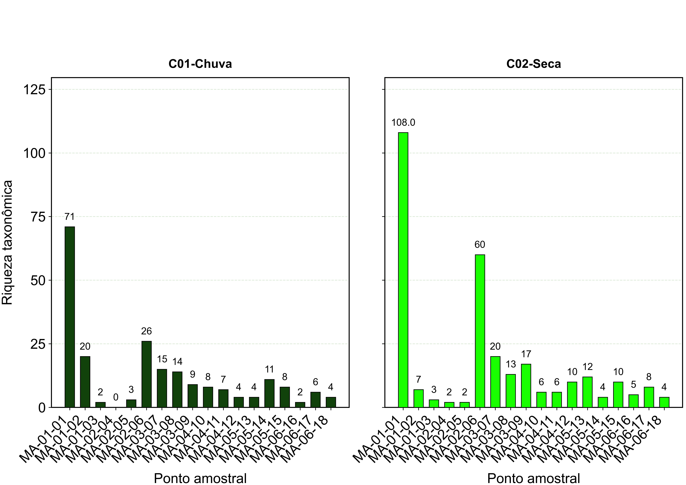
Riqueza por ponto
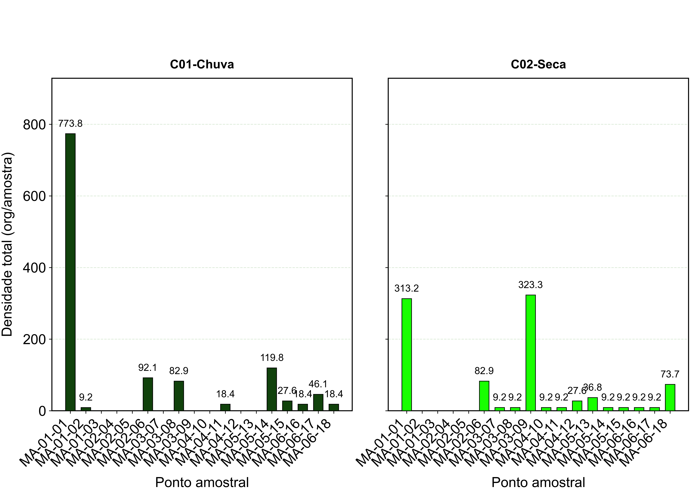
Densidade total por ponto
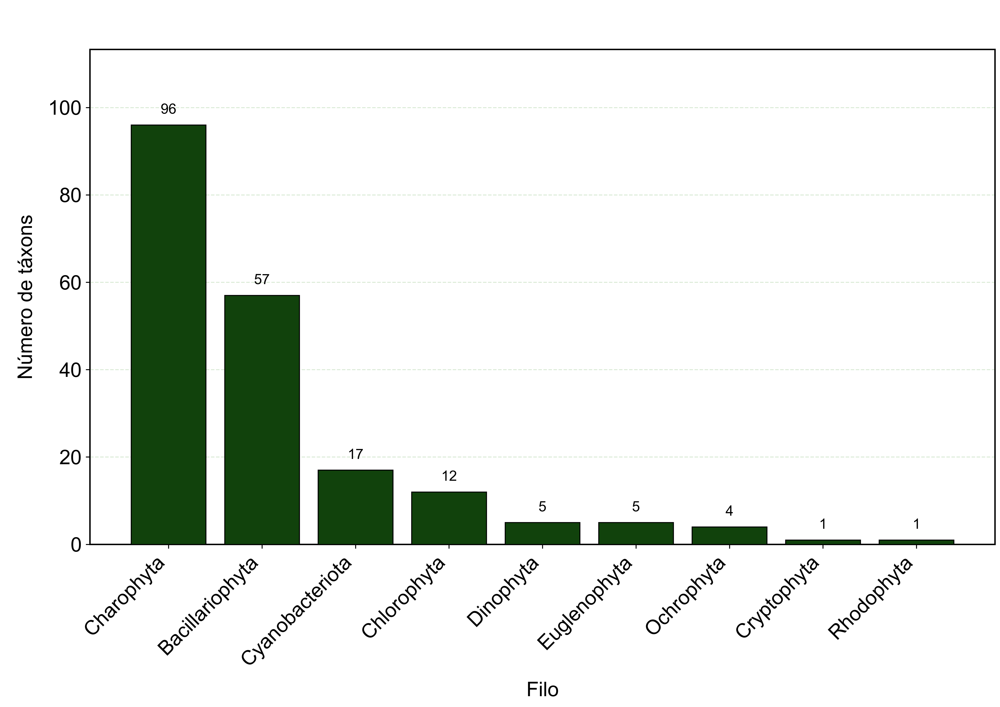
Riqueza por filo
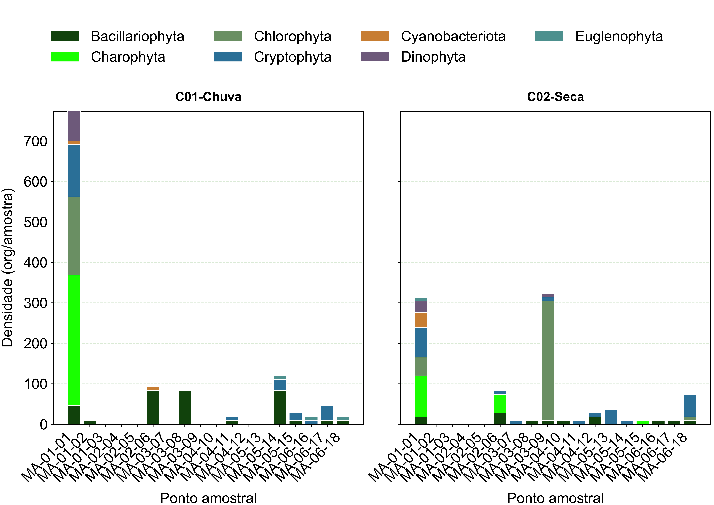
Densidade por filo
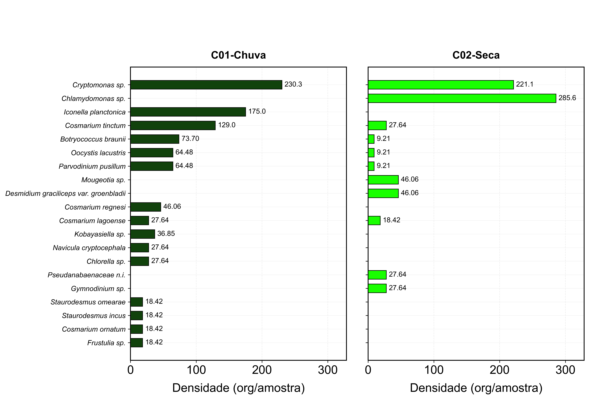
Densidade por táxon
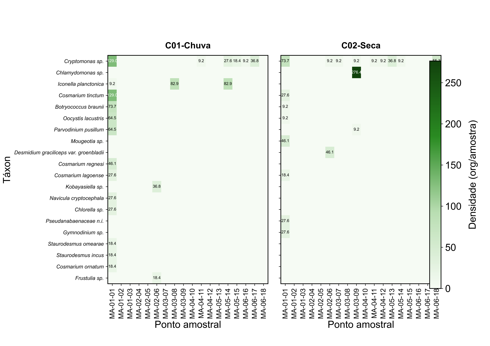
Densidade por táxon e amostra
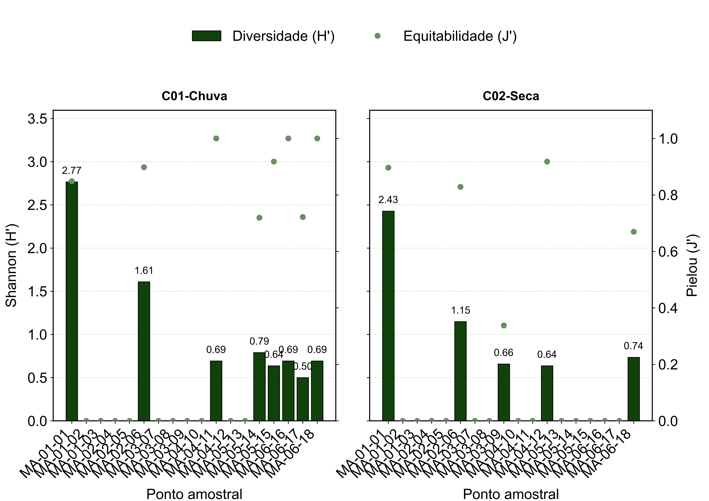
Diversidade alfa
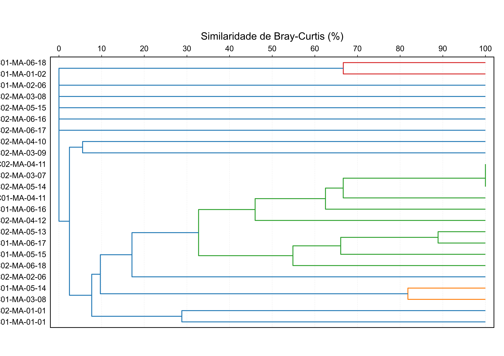
Similaridade
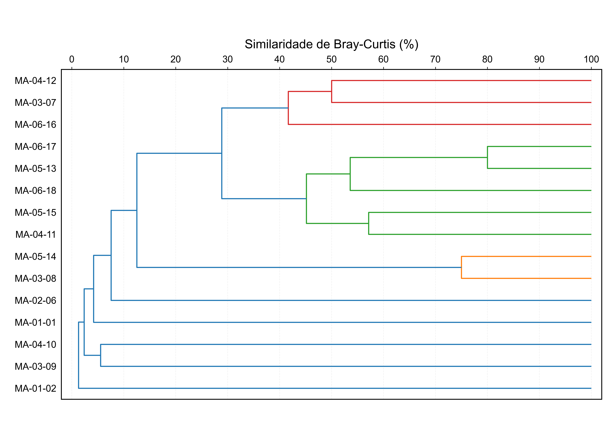
Similaridade geral por ponto
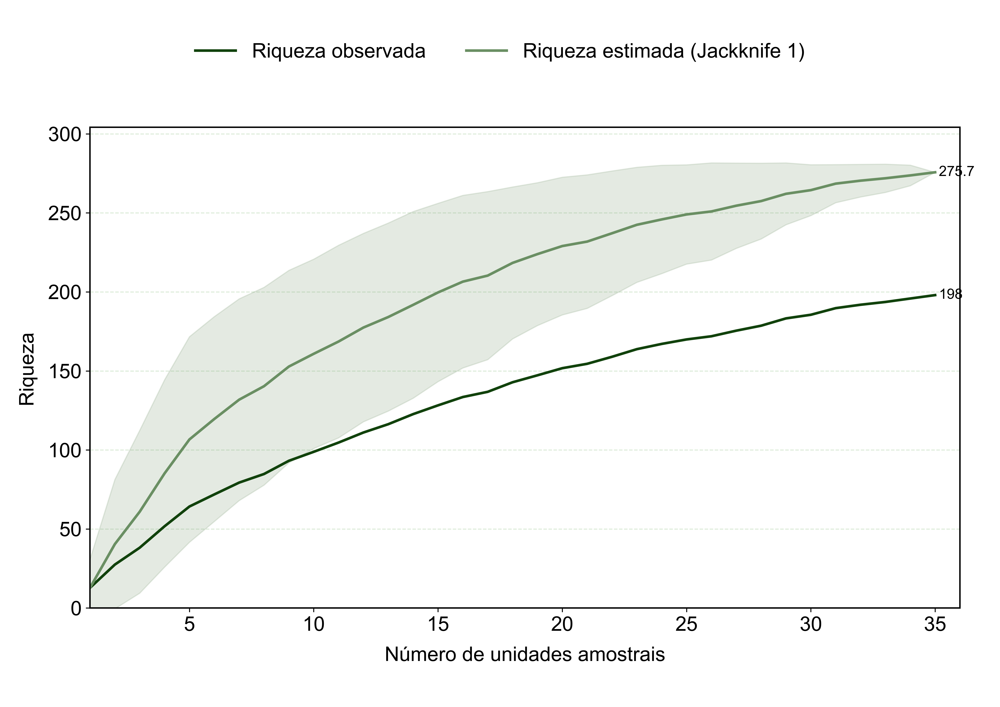
Suficiência amostral
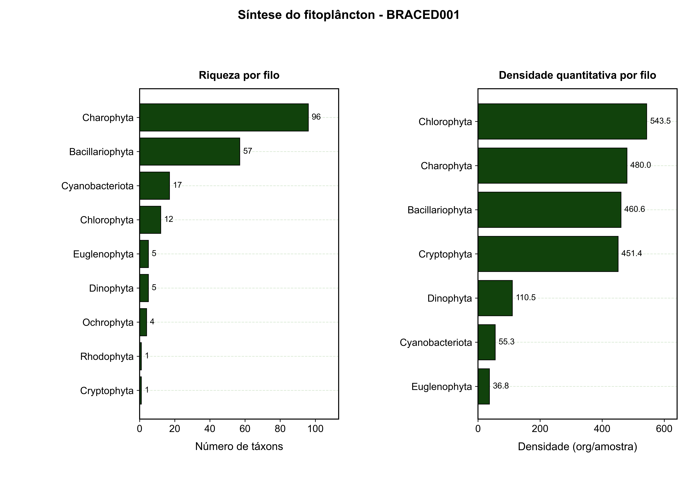
Síntese
Rastreabilidade
Manifesto: manifesto_entrega_fitoplancton_braced001.json e manifesto_entrega_fitoplancton_braced001.xlsx.